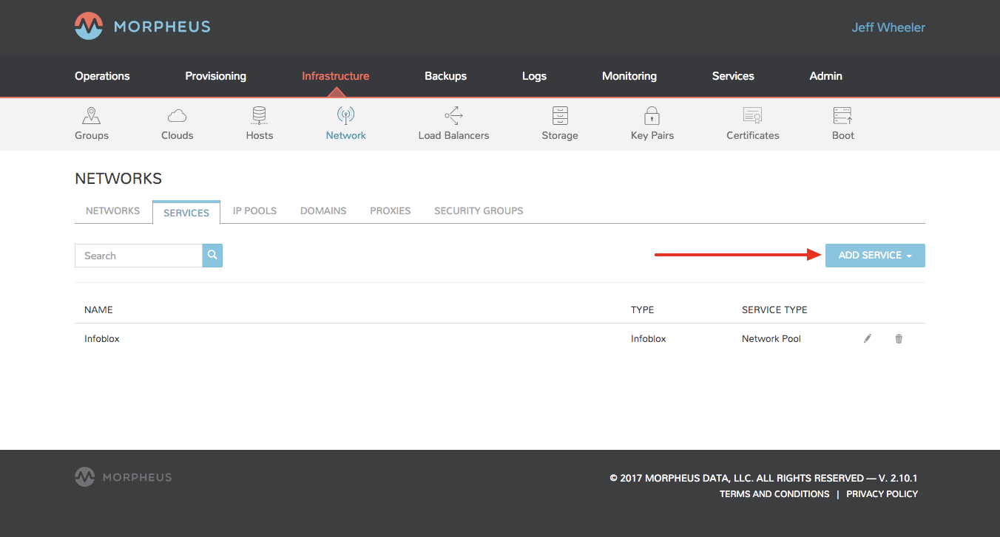
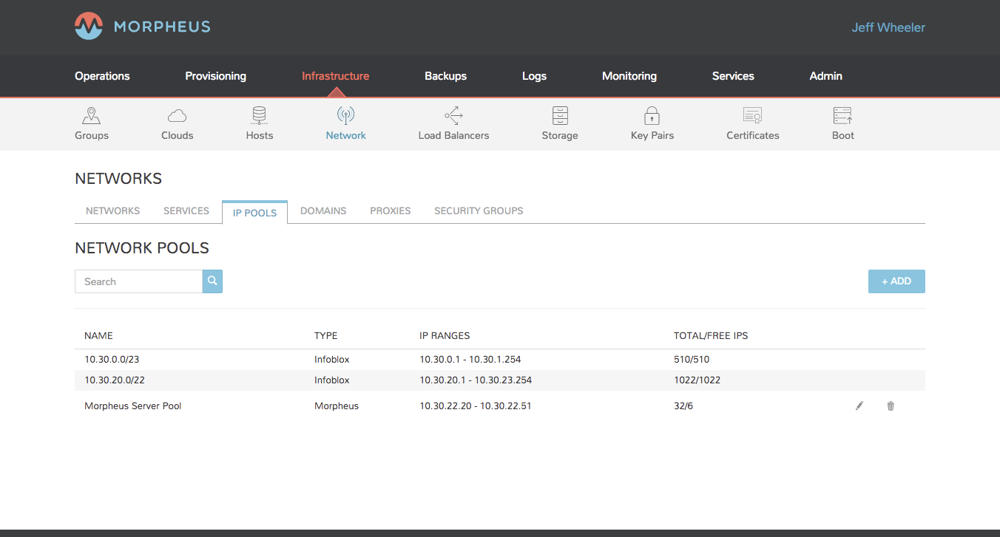
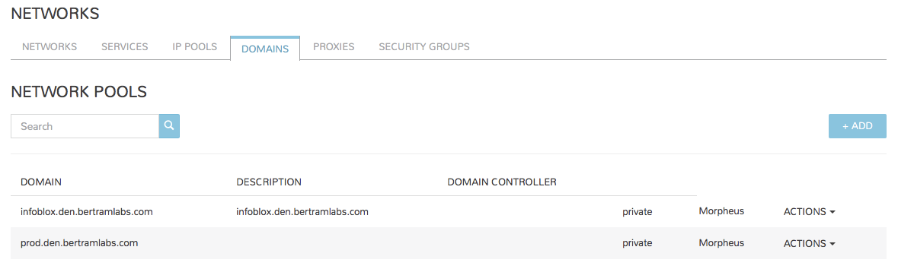
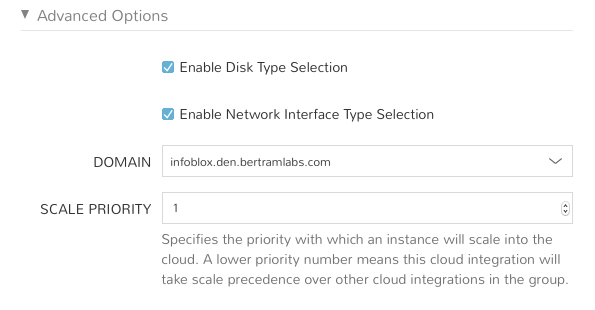
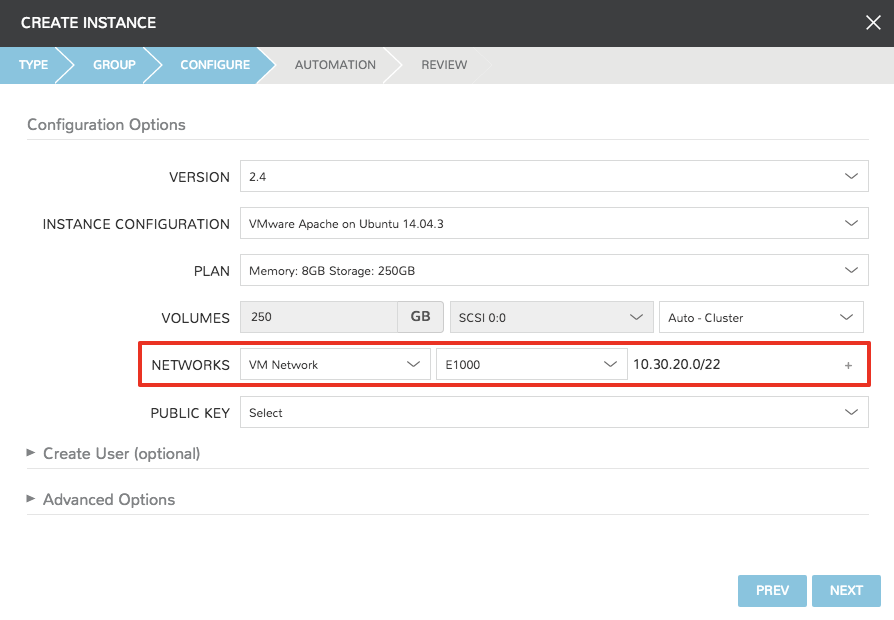
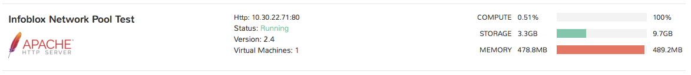

Infoblox¶
|morpheus| can integrate with Infoblox for IP address assignment. To add a Infoblox integration into |morpheus| :
- Add Infoblox as a Network Service integration
- Add Infoblox IP Pool(s) to your network(s)
- Configure your cloud(s) domain
- When provisioning, select Network with Infoblox pool added
Add Infoblox as a Network Service Integration¶
Navigate to Infrastructure -> Networks and select the Services tab
In the Services tab, select +ADD SERVICE, select Infoblox, and provide the following:
Add Pool Server
- Name
- URL (wapi url + version) example https://x.x.x.x/wapi/v2.2.1
- Username
- Password
Tip
You can find your Infoblox wapi version in the wapi doc on your Infoblox server at https://x.x.x.x/wapidoc
Save Changes and your Infoblox networks will be populated and available in the Network -> IP Pools section of |morpheus| .
Next we will need to add an Infoblox Network pool to a network in order to use the pool(s) during provisioning.
Add Infoblox IP Pool(s) to your network(s)
- Navigate to In Infrastructure - Networks, and in the Networks tab:
- Find and edit the network you want to assign an Infoblox pool to.
- For static IP assignment, Populate the Gateway, DNS, and CIDR info for the network, and deselect DHCP server.
- In the NETWORK POOL drop down, select the Infoblox network to assign IPs from.
- Save Changes
Configure your cloud(s) domain¶
The domain entered in you cloud(s) settings needs to match an Infoblox zone. To add a domain to your cloud(s)
- Under Infrastructure - Clouds, edit your cloud settings
- In the domain field, enter your domain
- In v2.9.x and prior, the domain field is at the top of the Cloud Config modal. .. image:: /images/administration/infoblox-ebde8.png
- In v2.10, the domain field is under Advanced Settings in the Cloud Config modal. .. image:: /images/administration/infoblox-976bd.png
- In v2.10.1 and later, a Domains section has been added in the Infrastructure -> Networks Section, and there is now a Domain dropdown to select a domain from the Networks section in the Cloud Config modal.
- Infrastructure -> Network -> Domains
- 
- Cloud Configuration
- 
Provisioning with Infoblox Pool¶
Once the Infoblox integration has been configured, while provisioning you can now select networks that have the Network Pools added, and the name of the Infoblox IP Pool will populate to the right of the selected network:
The during provisioning, your instance IP will be assigned by Infoblox:
